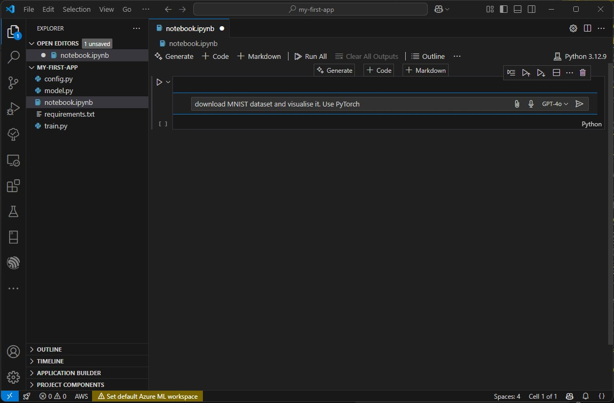
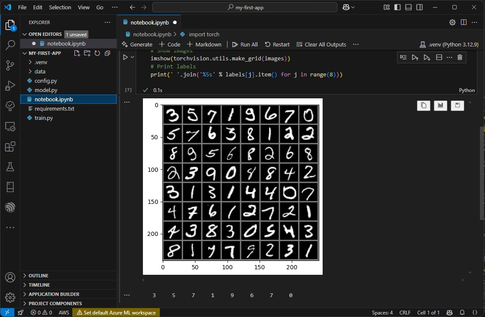

📚 Getting Started with Development Tools
Welcome! To start coding with AI assistance, we need to set up several essential tools. This guide will walk you through installing and configuring:
- Python - The programming language we'll be using (python.org)
- Visual Studio Code - Our code editor (code.visualstudio.com)
- GitHub Account - For accessing AI coding assistance (github.com)
- GitHub Copilot - Your AI programming partner (Learn more)
By the end of this tutorial, you'll have everything needed to start building applications with AI assistance!
🐍 Installing Python
Before setting up VS Code, let's install Python. Follow the instructions for your operating system:
HINT: If you're just starting, we recommend installing the latest stable Python version (3.11 or newer). Make sure to select "Add to PATH" during installation.
- Visit python.org/downloads
- Download the latest Python version for Windows
- Run the installer and make sure to check:
- "Add Python to PATH"
- "Install launcher for all users"
- Click "Install Now" for a standard installation
- Verify installation by opening Command Prompt and typing:
python --version


- Visit python.org/downloads
- Download the latest Python version for macOS
- Open the .pkg installer
- Follow the installation wizard
- Verify installation by opening Terminal and typing:
python3 --version
Alternatively, use Homebrew:
brew install python
Most Linux distributions come with Python pre-installed. If not:
Ubuntu/Debian:
sudo apt update sudo apt install python3 python3-pip
Fedora:
sudo dnf update sudo dnf install python3
Verify installation:
python3 --version
🛠️ Setting up Visual Studio Code
Visual Studio Code (VS Code) is a powerful, free code editor that we'll use throughout the program. It offers excellent Python support and integrates perfectly with GitHub Copilot.
- Download VS Code from code.visualstudio.com
- Run the installer (.exe file)
- Make sure these options are checked:
- Add "Open with Code" action to Windows Explorer
- Add to PATH
- Install extensions:
- Press Ctrl+Shift+X
- Search and install: Python, Jupyter, GitHub Copilot
- Download VS Code from code.visualstudio.com
- Open the downloaded .zip file
- Drag Visual Studio Code.app to Applications folder
- Install extensions:
- Press Cmd+Shift+X
- Search and install: Python, Jupyter, GitHub Copilot
Alternatively, use Homebrew:
brew install --cask visual-studio-code
Ubuntu/Debian:
sudo apt-get install wget gpg wget -qO- https://packages.microsoft.com/keys/microsoft.asc | gpg --dearmor > packages.microsoft.gpg sudo install -D -o root -g root -m 644 packages.microsoft.gpg /etc/apt/keyrings/packages.microsoft.gpg sudo sh -c 'echo "deb [arch=amd64,arm64,armhf signed-by=/etc/apt/keyrings/packages.microsoft.gpg] https://packages.microsoft.com/repos/code stable main" > /etc/apt/sources.list.d/vscode.list' sudo apt install apt-transport-https sudo apt update sudo apt install code
Install extensions:
- Press Ctrl+Shift+X
- Search and install: Python, Jupyter, GitHub Copilot
⚙️ Build your first application with Python and VSCode
Now it's time to build your first application in VS Code using Python!
Projects in VS Code are organized around folders. Follow these steps:
- Create a new folder on your computer for your project
- In VS Code, go to File > Open Folder (or use the button shown below)
- Select your newly created folder


Once your empty folder is opened, create a new file. You can name it hello_world.py

Add some to your file, like below. Pay attention that at the bottom is your Python environment selector. Use Start button in the top right corner to start your application:

🤖 Setting up GitHub Copilot
To activate GitHub Copilot:
- First, create a GitHub account at github.com if you don't have one yet
- Visit GitHub Copilot to start your free trial
- In VS Code, click the Copilot icon in the sidebar or use Ctrl+Shift+P and type "GitHub Copilot: Sign In"
Then, go to VSCode and sign in to your GitHub account:

🤖 Build Applications with GitHub Copilot!
Now that GitHub Copilot is set up, let's see how it can help you write code! Copilot works in two main ways:
- Inline Suggestions - As you type, Copilot suggests code completions
- Chat & Edits - Have a conversation with Copilot or let it modify entire files
Let's try using Copilot Edits - a powerful feature that can modify your code based on natural language descriptions:
- Click on the GitHub Copilot icon in the sidebar or press
Ctrl+Shift+Pand type "Open Copilot" - Select "Open Copilot Edits" from the menu

We'll start with our simple application and ask Copilot to enhance it. Here's an example prompt:
Update my code: I want my application to ask the user for their name and age, then calculate a number that is equal to the age raised to the power of the number of letters in their name. Also, add some basic input validation.

After you submit the prompt, Copilot will analyze your request and suggest changes:

Review the suggested changes, then:
- Click "Accept" if you're happy with the changes
- Save the file (
Ctrl+S) - Run your enhanced application using the Play button in the top right

💡 Pro Tips:
- Be specific in your prompts - tell Copilot exactly what you want
- Ask for explanations if you don't understand the suggested code
- Use comments in your code to guide Copilot's suggestions
- Try different prompts if you're not satisfied with the first suggestion
🤖 Advanced Copilot
GitHub Copilot is a powerful AI pair programmer that can help you with:
- Writing new code and completing your lines
- Explaining existing code
- Generating tests
- Fixing bugs
- Converting code between languages
Pro Tips:
- Use comments to guide Copilot's suggestions
- Press Tab to accept suggestions
- Press Ctrl+Enter in comments to get inline suggestions
- Use Alt+\ to open Copilot Chat
You can do much more with CoPilot! For example you can ask to build advanced models, install new packages and ask to edit multiple files at once. Let's ask CoPilot to build an object detection model from scratch!
Build a classic digit recognition system for MNIST dataset using PyTorch. Implement simple Perceptron model. Install required packages (requiremnts.txt), and setup fully working demo that will train and validate model.

📓 Use Jupyter Notebooks with VSCode
Jupyter Notebooks are perfect for data science and machine learning. They allow you to combine code, text, and visualizations in a single document. Here's how to use them in VS Code:
- First, install Jupyter support:
pip install jupyter notebook
- Create a new notebook by either:
- Pressing Ctrl+Shift+P and typing "Create New Jupyter Notebook"
- Clicking the "New File" button and choosing the .ipynb extension
GitHub Copilot works in Jupyter Notebooks too!
 Key notebook controls:
- Click the "[ ]" button to add a new code cell
- Click the "T" button to add a text (markdown) cell
- Press Shift+Enter to run a cell
- Use the "Select Kernel" button to choose your Python environment
Here's a simple example to try:
import numpy as np
import matplotlib.pyplot as plt
x = np.linspace(0, 10, 100)
y = np.sin(x)
plt.plot(x, y)
plt.title('Simple Sine Wave')
plt.show()
💡 Notebook Tips:
- Use markdown cells to document your code
- Variables persist across cells during a session
- Use kernel restart to clear all variables
- You can export notebooks to Python files or HTML